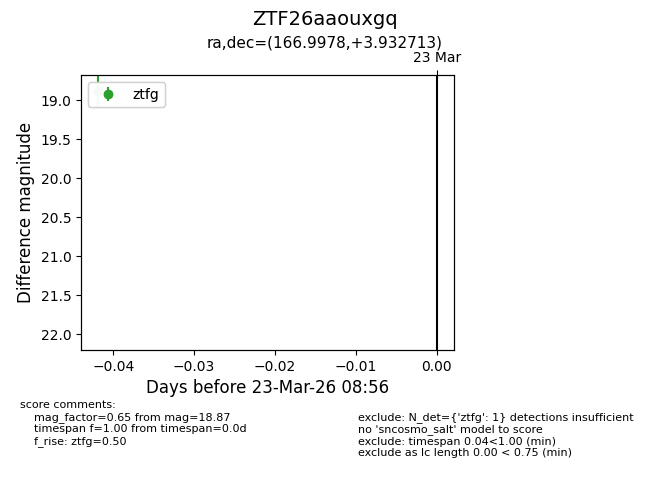
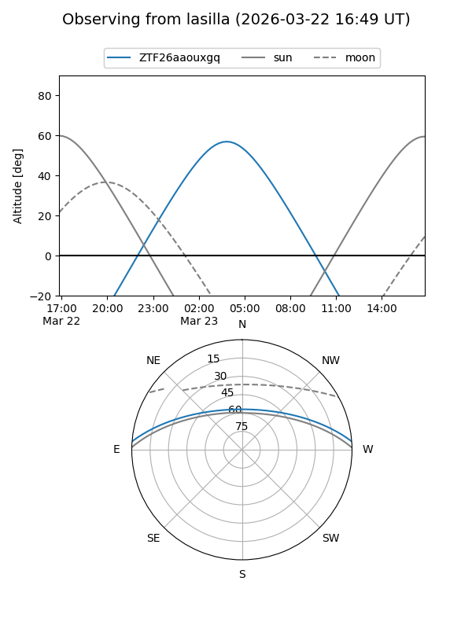
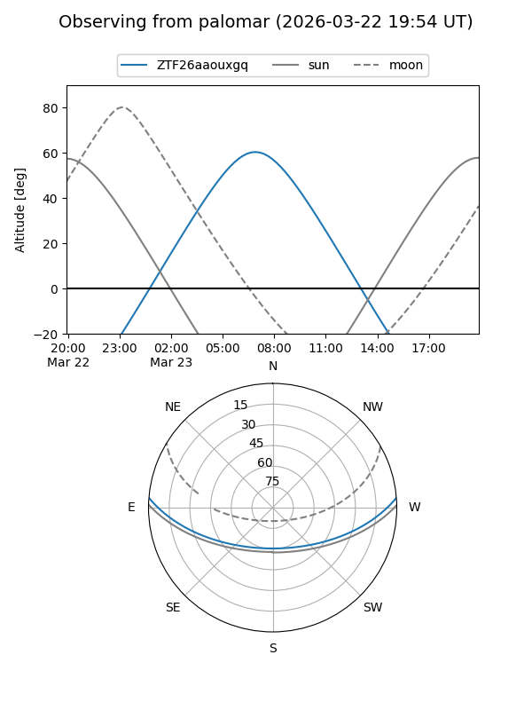

ZTF26aaouxgq
Target ZTF26aaouxgq at 2026-03-23 08:58
Aliases and brokers:
FINK: link
Lasair: link
ALeRCE: link
alt names
ZTF26aaouxgq (ztf,fink_ztf)
Coordinates:
equatorial (ra, dec) = 166.9978,+3.93271
equatorial (HMS+DMS) = 11:07:59.47,+03:55:57.77
galactic (l, b) = (251.6056,+56.12373)
Flags:
Photometry:
last ztfg=18.87
1 ztfg detections
Lightcurve

Visibility


Additional plots